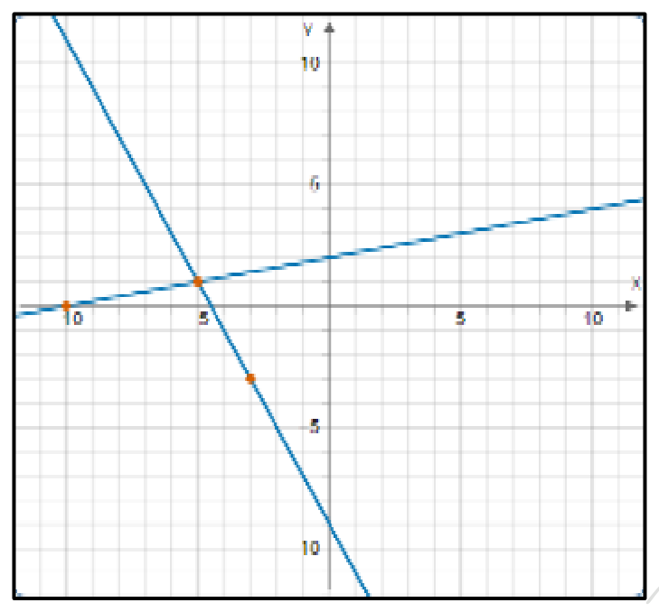

אלגברה לכיתה ח'
70
נתונים שני ישרים במערכת צירים:

- א.מצאו את שיעורי נקודת החיתוך בין שני הישרים.(,)
- ב.מבין שלושת זוגות המשוואות, איזה זוג מתאר את הישרים הנתונים? נמקו.הזוג הראשוןהזוג השניהזוג השלישינמקו: